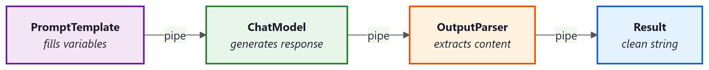

LangChain: Chains, Agents, and Retrieval provides a unified interface for working with large language models from any provider. Its core abstractions (models, prompts, and chains) let you write provider-agnostic code, compose complex workflows from simple building blocks, and switch between OpenAI, Anthropic, Google, and open-source models with minimal changes. This section covers the foundational primitives you will use in every LangChain: Chains, Agents, and Retrieval application.
1. Chat Models
At the heart of LangChain: Chains, Agents, and Retrieval is the chat model abstraction. Rather than calling each provider's SDK directly, you instantiate a chat model class that normalizes the interface. All chat models accept a list of messages and return an AIMessage. This means you can swap providers without rewriting your application logic.
The following example shows how to instantiate chat models for OpenAI and Anthropic, then invoke them with identical message lists.
from langchain_openai import ChatOpenAI
from langchain_anthropic import ChatAnthropic
from langchain_core.messages import HumanMessage, SystemMessage
# Instantiate models from different providers
openai_model = ChatOpenAI(model="gpt-4o", temperature=0.7)
anthropic_model = ChatAnthropic(model="claude-sonnet-4-20250514", temperature=0.7)
# Both accept the same message format
messages = [
SystemMessage(content="You are a helpful coding assistant."),
HumanMessage(content="Explain Python list comprehensions in two sentences.")
]
# invoke() returns an AIMessage
response = openai_model.invoke(messages)
print(response.content)
# Swap to Anthropic with no other code changes
response = anthropic_model.invoke(messages)
print(response.content)
The invoke() method is synchronous and returns a single response. LangChain: Chains, Agents, and Retrieval also provides stream() for token-by-token output, batch() for processing multiple inputs in parallel, and their async counterparts ainvoke(), astream(), and abatch().
This example demonstrates streaming and batch processing.
from langchain_openai import ChatOpenAI
from langchain_core.messages import HumanMessage
model = ChatOpenAI(model="gpt-4o-mini", temperature=0)
# Streaming: tokens arrive incrementally
for chunk in model.stream([HumanMessage(content="Write a haiku about Python.")]):
print(chunk.content, end="", flush=True)
print()
# Batch: process multiple inputs concurrently
questions = [
[HumanMessage(content="What is a decorator?")],
[HumanMessage(content="What is a generator?")],
[HumanMessage(content="What is a context manager?")],
]
responses = model.batch(questions, config={"max_concurrency": 3})
for resp in responses:
print(resp.content[:80], "...")Use batch() with max_concurrency to respect provider rate limits while still processing inputs faster than sequential invoke() calls. For real-time user-facing applications, prefer stream() so users see output as it is generated.
2. Prompt Templates
Hard-coding prompt strings into application code leads to maintenance headaches. LangChain: Chains, Agents, and Retrieval's prompt templates separate the prompt structure from the runtime variables that fill it. There are two main types: PromptTemplate for plain string prompts and ChatPromptTemplate for multi-message chat prompts.
The following example builds a chat prompt template with a system message and a user message that includes a variable placeholder.
from langchain_core.prompts import ChatPromptTemplate, PromptTemplate
# Simple string template (useful for completion-style models)
string_template = PromptTemplate.from_template(
"Translate the following text to {language}: {text}"
)
print(string_template.format(language="French", text="Hello, world!"))
# Chat prompt template (recommended for chat models)
chat_template = ChatPromptTemplate.from_messages([
("system", "You are a {role} who explains concepts at a {level} level."),
("human", "{question}")
])
# format_messages returns a list of Message objects
messages = chat_template.format_messages(
role="computer science professor",
level="beginner",
question="What is recursion?"
)
for msg in messages:
print(f"{msg.__class__.__name__}: {msg.content}")
Templates support partial application via partial(), letting you fill some variables now and the rest later. This is useful when certain values (like the current date or a system configuration) are known at initialization time but others arrive at runtime.
3. Chains: The Legacy LLMChain
Early versions of LangChain: Chains, Agents, and Retrieval used the LLMChain class to connect a prompt template to a model. While this still works, it has been superseded by the LangChain: Chains, Agents, and Retrieval Expression Language (LCEL). Understanding LLMChain is helpful for reading older code and tutorials.
This example shows the legacy chain approach for comparison with the modern LCEL approach that follows.
from langchain.chains import LLMChain
from langchain_openai import ChatOpenAI
from langchain_core.prompts import ChatPromptTemplate
# Legacy approach (still functional, but not recommended for new code)
prompt = ChatPromptTemplate.from_messages([
("system", "You are a helpful assistant."),
("human", "Explain {topic} in {num_sentences} sentences.")
])
model = ChatOpenAI(model="gpt-4o-mini")
chain = LLMChain(llm=model, prompt=prompt)
result = chain.invoke({"topic": "gradient descent", "num_sentences": "3"})
print(result["text"])LLMChain and other legacy chain classes are deprecated as of LangChain: Chains, Agents, and Retrieval 0.2. New projects should use LCEL (covered next). The legacy classes remain available for backward compatibility but will not receive new features.
4. LangChain: Chains, Agents, and Retrieval Expression Language (LCEL)
LCEL is LangChain: Chains, Agents, and Retrieval's modern composition framework. It uses the pipe operator (|) to chain components together, similar to Unix pipes. Every LCEL component implements the Runnable interface, which means it automatically supports invoke(), stream(), batch(), and their async variants. This composability is the key design principle: you build complex workflows by snapping simple pieces together.
The simplest LCEL chain connects a prompt template to a model and (optionally) an output parser.
from langchain_openai import ChatOpenAI
from langchain_core.prompts import ChatPromptTemplate
from langchain_core.output_parsers import StrOutputParser
# Define components
prompt = ChatPromptTemplate.from_messages([
("system", "You are a concise technical writer."),
("human", "Explain {concept} in exactly {sentences} sentences.")
])
model = ChatOpenAI(model="gpt-4o-mini", temperature=0)
parser = StrOutputParser()
# Compose with the pipe operator
chain = prompt | model | parser
# invoke() flows data through: prompt -> model -> parser
result = chain.invoke({"concept": "MapReduce", "sentences": "3"})
print(result) # A plain string (parser extracts .content from AIMessage)
# Streaming works automatically through the entire chain
for token in chain.stream({"concept": "Docker containers", "sentences": "2"}):
print(token, end="", flush=True)
5. RunnablePassthrough and RunnableParallel
Real-world chains often need to pass original input alongside computed values, or run multiple steps in parallel. LangChain: Chains, Agents, and Retrieval provides two utility classes for these patterns: RunnablePassthrough passes its input through unchanged, and RunnableParallel runs multiple runnables simultaneously, collecting their outputs into a dictionary.
This example uses RunnableParallel to run two independent LLM calls concurrently, then merges the results.
from langchain_openai import ChatOpenAI
from langchain_core.prompts import ChatPromptTemplate
from langchain_core.output_parsers import StrOutputParser
from langchain_core.runnables import RunnableParallel, RunnablePassthrough
model = ChatOpenAI(model="gpt-4o-mini", temperature=0)
parser = StrOutputParser()
# Two independent chains
pros_chain = (
ChatPromptTemplate.from_template("List 3 pros of {technology}.")
| model | parser
)
cons_chain = (
ChatPromptTemplate.from_template("List 3 cons of {technology}.")
| model | parser
)
# RunnableParallel runs both chains concurrently
parallel = RunnableParallel(pros=pros_chain, cons=cons_chain)
result = parallel.invoke({"technology": "microservices"})
print("PROS:", result["pros"])
print("CONS:", result["cons"])RunnablePassthrough is especially useful in retrieval-augmented generation (RAG) pipelines where you need to forward the user's original question alongside retrieved context.
from langchain_core.runnables import RunnablePassthrough, RunnableParallel
# Pattern: pass the question through while also running a retrieval step
# (retriever would be a real vectorstore retriever in practice)
def mock_retriever(query: dict) -> str:
return "Python was created by Guido van Rossum in 1991."
setup = RunnableParallel(
context=lambda x: mock_retriever(x),
question=RunnablePassthrough()
)
rag_prompt = ChatPromptTemplate.from_template(
"Context: {context}\n\nAnswer this question: {question}"
)
rag_chain = setup | rag_prompt | model | parser
answer = rag_chain.invoke("Who created Python?")
print(answer)You can inspect any LCEL chain's structure by calling chain.get_graph().print_ascii(). This renders an ASCII diagram showing how components are connected, which is invaluable for debugging complex chains.
6. Configuring Model Parameters at Runtime
LCEL chains accept a config dictionary at invocation time for runtime customization. You can also use .configurable_fields() to expose model parameters (such as temperature or model name) as runtime-configurable options without rebuilding the chain.
This example shows how to make the model name configurable so that callers can switch between models per request.
from langchain_openai import ChatOpenAI
from langchain_core.prompts import ChatPromptTemplate
from langchain_core.output_parsers import StrOutputParser
from langchain_core.runnables import ConfigurableField
model = ChatOpenAI(model="gpt-4o-mini", temperature=0).configurable_fields(
model_name=ConfigurableField(
id="model_name",
name="Model Name",
description="The OpenAI model to use"
)
)
chain = (
ChatPromptTemplate.from_template("Summarize: {text}")
| model
| StrOutputParser()
)
# Use default model
result1 = chain.invoke({"text": "LangChain: Chains, Agents, and Retrieval is a framework for LLM apps."})
# Override model at runtime
result2 = chain.with_config(
configurable={"model_name": "gpt-4o"}
).invoke({"text": "LangChain: Chains, Agents, and Retrieval is a framework for LLM apps."})LCEL replaces the legacy chain classes with a composable, pipe-based syntax. Every component in an LCEL chain automatically supports invoke, stream, batch, and async variants. Use RunnableParallel for concurrent execution and RunnablePassthrough to forward data alongside computed values.